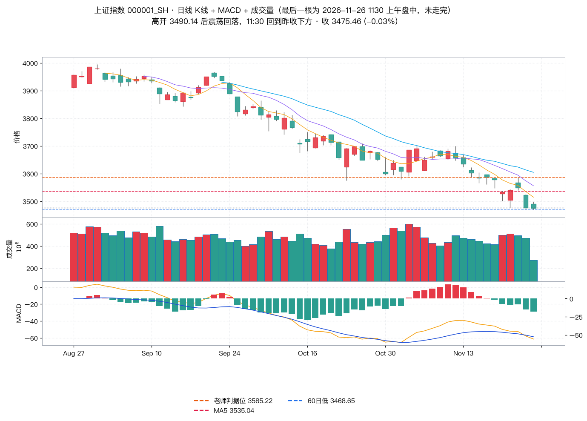
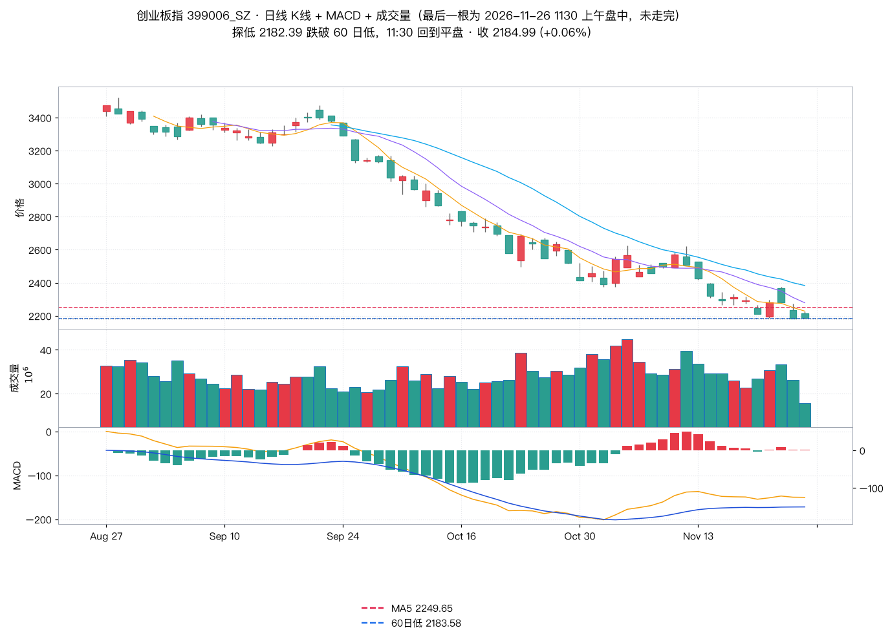
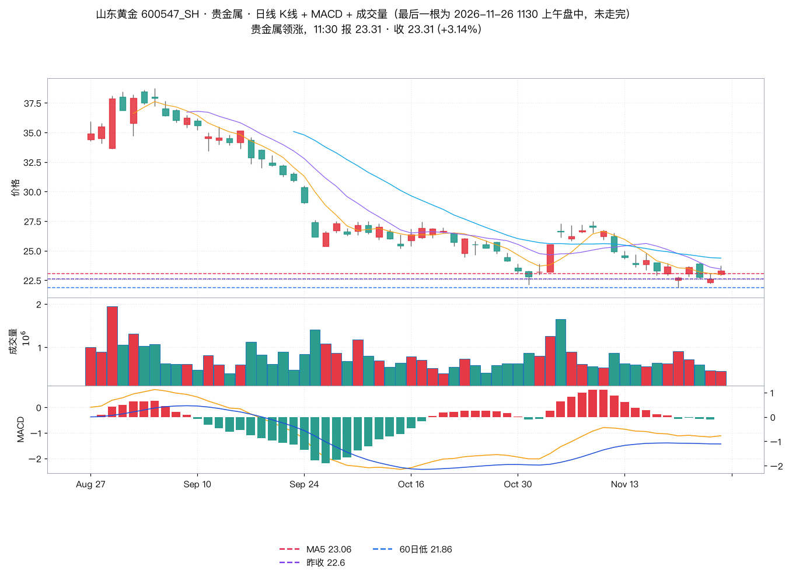
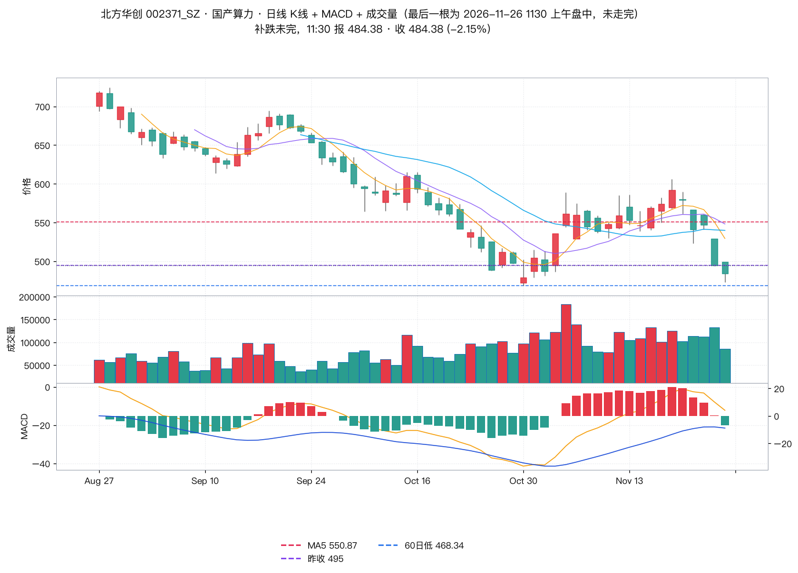

结论：高开后震荡回落，指数回到平盘，仍是弱势震荡，仓位保持轻仓、少出手。 11:30 上证 3475.46（-0.03%）、创业板指 2184.99（+0.06%），两市半日成交 7963.0 亿（昨同刻 7630.5 亿，+4.36%）。申万 L1 煤炭 +2.19%、石油石化 +1.30%、有色金属 +1.25% 领涨，元件/PCB +3.27% 活跃；国产算力芯片端、人形机器人 -3.25%、传媒 -0.67% 补跌未完。早评点名的 8 只仍全部无方法买点。
① 「小幅高开后呈现震荡走势」：上证开 3490.14（+0.39%）、深成 10184.94（+0.98%）、创业板 2213.12（+1.35%）；11:30 收 3475.46（-0.03%）、深成 10101.72（+0.15%）、创业板 2184.99（+0.06%），高开幅度基本回吐。② 日内路径：创业板指最低 2182.39（跌破 60 日低 2183.58）、科创50 最低 1167.93（-1.54%），成长端盘中破位后回抽。③ 对应昨日分类标准：「走势继续向下运行，可辅助日线有力度底分型观察阶段低点是否出现」——缠论结构按老师口径引用；可核前提是上证 3475.46 未站 MA5 3535.04（差 59.58 点），止跌三要件第 2 条不满足。④ 3585 判据：上午最高 3497.71，距 11/24 高点 3585 差 87.51 点，「突破高点 3585 后出 15 分钟底分型的三买」条件未满足。⑤ 弱势震荡：涨 2218 / 跌 2765（比 0.80）、跌超 5% 81 只、科创50 -0.93%。

上证指数：11:30 报 3475.46（-0.03%），未站 MA5 3535.04

创业板指：探低 2182.39 跌破 60 日低，11:30 回到 2184.99
| 老师口径（11-26 午盘） | 实测（11:30） | 判定 |
|---|---|---|
| 「昨日收盘后市场温度是 20°，一类热点和二类热点榜都是空的」 | 本机无热点榜数据源，榜单本身无法核验；用申万 L1 核前提：涨幅前三为煤炭 +2.19%、石油石化 +1.30%、有色金属 +1.25%，而计算机 -0.82%、传媒 -0.67%，成长主线未进前三 | 前提部分成立 |
| 「今天盘面是贵金属方向，以及资源类如煤炭、油气等领涨」 | 山东黄金 +3.14%、中国海油 +3.08%、中海油服 +2.28%、中国石油 +1.14%、中国石化 +1.03%、中国神华 +1.02%；煤炭/石油篮子 +1.71%（5 涨/0 跌） | 一致 |
| 「算力方向的元件还比较活跃，其他方向强度就一般」 | 元件/PCB +3.27%（7/1，崇达技术涨停 +10.02%、生益科技 +5.24%）、算力/CPO +2.53%（5/0）、华为概念 +2.83%（6/1）；其余方向涨幅均 ≤+1.3% | 一致 |
| 「在整个算力较弱情况下…元件板块结构角度分析和指数类似，属于弱势震荡」 | 算力整体并不弱：CPO 5 只全涨、华为概念 6 只涨；元件确为冲高回落——生益科技 高 62.73 → 收 61.49，深南电路 高 212.19 → 收 206.29 | 口径差异 |
| 「国产算力有补跌风险，当下还在释放中…我认为还没释放完」 | 篮子 +0.90%（3/4），但芯片端在跌：中芯国际 -4.50%（低 115.91）、北方华创 -2.15%（低 472.00）、中科曙光 -2.21%；涨的是常山北明 +9.98%、拓维信息 +2.52% | 部分成立 |
| 「人形机器人和传媒板块的补跌风险也没有完全释放完」 | 人形机器人 -3.25%（0 涨/9 跌，拓普集团 -6.02%、北特科技 -4.25%）、传媒 -0.67%（涨 29/跌 96）、AI视频/传媒 -1.01%（1/6） | 一致 |
① 资源类是上午唯一有方向的方向：煤炭 +2.19%（涨 32/跌 1）、石油石化 +1.30%、有色 +1.25%，但涨幅均 ≤2.19%、成交只有 56–389 亿量级 —— 「能否在弱势中成为独立走强方向」尚未验证。② 元件最强但只是反弹：崇达技术涨停，日内冲高回落，先看持续性。③ 补跌三方向没走完：芯片端、人形机器人、传媒全在跌，资金只在资源与 PCB 里打转，热点并不明朗。

山东黄金（贵金属）：11:30 报 23.31（+3.14%），贵金属方向领涨

北方华创（国产算力）：11:30 报 484.38（-2.15%），补跌未完
| 标的 | 11:30 | 老师口径（承早评） | 关键位 / 触发条件 | 实测印证 | 动作 |
|---|---|---|---|---|---|
| 康龙化成 300759 大医药 | 41.10 +2.96% | 中线 · 较强，2-3 天观察修复 | 等日线有力度底分型 | 高 42.30，站上 MA5 40.14（+2.39%） | 等 |
| 瑞芯微 603893 端侧AI | 192.04 -0.85% | 中线 · 震荡已偏弱 | 等内部震荡后再找机会 | 低 191.43，破 MA5 195.59（差 3.55 元） | 不操作 |
| 海天瑞声 688787 机器人 | 92.30 -5.44% | 中线 · 已走弱，不追涨 | 等 2-3 天 | 低 91.57，破 MA5 95.93（差 3.63 元），池内跌幅最大 | 不操作 |
| 伊利股份 600887 大消费 | 33.35 -0.68% | 中线 · 无买点，盯 31.95 得失 | 31.95 | 低 33.34 未破（差 1.39 元）→ 顶背驰未成立 | 等 |
| 创业板ETF 159915 创业板宽基 | 2.200 +0.05% | 中线 · 站稳 2.392 后出 15 分钟底分型三买 | 2.392 | 高 2.242，未触（差 0.192 元） | 等 |
| 中国船舶 600150 船舶 | 34.78 -0.40% | 中线 · 走势没有止跌 | 无买点 | 低 34.72，收在 MA5 34.75 上方 0.03 元，缺有力度底分型 | 不操作 |
| 中芯国际 688981 国产算力 | 116.51 -4.50% | 中线 · 防范补跌 | 等日线有力度底分型 | 低 115.91，MA5 123.56（差 7.05 元） | 等 |
| 兆易创新 603986 存储芯片 | 198.71 +0.22% | 短线 · 创新低等底背驰，或突破出三买 | 198.28（60 日低） | 低 197.59 已破 60 日低 198.28，「创新低」条件已触发 | 等 |
| 老师口径 | 实测 | 判定 |
|---|---|---|
| 「在整个算力较弱情况下，建议先观察元件的持续性」 | 算力/CPO +2.53%（5 只全涨）、华为概念 +2.83%（6/1），算力并不弱；元件自身确为冲高回落 | 口径差异 |
| 「相对比较弱周期高股息品种略显强点」 | 煤炭/石油 +1.71%（5/0）成立；但高股息红利 -0.14%（2/5）、保险 -0.69%（0/5）、银行 +0.11% —— 强在周期资源，不在高股息与保险 | 口径差异 |
| 「国产算力…今天不太明显」 | 篮子 +0.90% 看似不明显，但芯片端明显在跌：中芯国际 -4.50%、北方华创 -2.15%（低 472.00）、中科曙光 -2.21% | 部分成立 |
| 「市场温度是 20°，一类热点和二类热点榜都是空的」 | 本机无热点榜数据源，榜单无法核验；用申万 L1 核前提：涨幅前三为煤炭/石油石化/有色（均 ≤+2.19%），计算机 -0.82%、传媒 -0.67%，无普涨主线 | 前提部分成立 |
| 「辅助走势向上突破高点 3585 后出 15 分钟底分型的三买」 | 上午最高 3497.71，距 3585 差 87.51 点，条件未满足（15 分钟结构按老师口径引用） | 前提成立 |
其余判据当日一致 ✓：小幅高开后震荡、弱势震荡、总体轻仓与控制出手频次、贵金属与资源类领涨、元件活跃而其他方向强度一般、人形机器人与传媒补跌未完、早评点名的中线 7 只 + 短线 1 只仍全部无方法买点。
点位：腾讯「5 日分时」11:30 切片（当日未走完）；涨跌家数、申万 L1 板块、涨停/跌停/炸板池：11:30 全市场快照 5,223 只；两市半日成交额 = 沪 sh000001 + 深 sz399106 累计额，同比对昨同刻 11:30（昨同刻 7630.5 亿）；MA5 / 60 日高低取 Tushare 前复权日线（基准 2026-11-25 收盘）；K 线为前复权日线 + 当日 11:30 未走完 K 线，红涨绿跌。
缠论定性（底分型、三买、底背驰、顶背驰）按老师口径引用，我方未复算，不作为买点依据。
来源：都业华《高级班》午盘 2026-11-26，执业编号 A0400626100004。以上内容仅供参考，不作为买卖依据，据此操作风险自担。投资有风险，入市需谨慎。
报告口径为 11:30 上午收盘数据，不含下午盘信息。